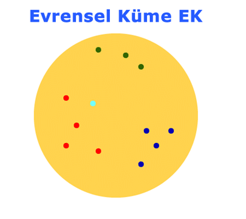

Bölüm 1
1 - Başlangıç Bilgileri
c1t3-Uygulama-1 Sayfası
Semboller ve Sayısal Küme Uygulamaları
Uygulama 1 (Tümü ve Bazıları Sembolleri)
Bir A kümesi,
A = {x ∈ N | 0 < x < 10}
olarak tanımlanmıştır. ∀x ‘i belirleyiniz.
Çözüm:
∀x terimi, tüm x ler anlamına gelir. Burada x lerin tanım ve kapsam alanı A kümesi ile tanımlanmıştır. Buna başvuru (rekürans) bağıntısı denilir. Yani, x lerin değerini belirlemek için başvuracağımız tanım, A kümesinin tanımı olacaktır.
A kümesinin tanımında, x ler, A kümesinin elemanları olarak tanımlanmışlardır. Bu tanımda,
x lerin doğal sayılar kümesinin birer elemanı oldukları,
değerlerinin 0 dan büyük ve 10 dan küçük olacağı,
belirtilmiştir.
Doğal sayılar kümesinin elemanlarını, 1 den başlayarak, değeri artan pozitif tamsayılar olarak tanımlamış olduğumuzdan, 0 dan büyük ilk elemanın 1 ve 10 dan küçük ilk elemanın 9 olması gerekir. Buna göre, x ler kümesi,
x = {1 , 2 , 3 , 5 , 6 , 7 , 8 , 9}
olarak tanımlanır.
x lerin değer aralığını,
x = 1 , 2 , ... , 9
şeklinde de belirtebiliriz. Birbirini izleyen üç noktaya, “Elipsis Noktaları” adı verilir. Bunun anlamı,
x ler, 1 den dokuza kadar (1 ve 9 dahil) değer alacaklardır,
Birinci değer 1 olacaktır,
İkinci değer 2 olacaktır.
Birbirini izleyen iki ardışık (ard arda gelen , birbirini izleyen) elemanın arasındaki fark, ikinci ve birinci elemanlar arasındaki fark kadar olacaktır.
Bu tanım,
İlk iki elemanın 1 ve 2 olacağını,
Δ = birinci ve ikinci eleman arasındaki fark olarak tanımlanırsa, Δ = 2 - 1 = 1 olacağını,
Üçüncü elemanın 2 + Δ = 2 + 1 = 3 olacağını,
Dördüncü elemanın 3 + 1 = 4 olacağını,
Sekansın (birbini izleyen işlemlerin) x değeri 9 oluncaya kadar, aynı şekilde devam ederek 9 da sonlanacağını
belirtir. Bu şekilde, x lerin tanımı aynı x kümesinin tanımı gibi olmaktadır.
Çözüm Sonu
Uygulama 2 (Kuvvet Kümeleri)
Bir A kümesi,
A = {1, 2, 3, 4}
olarak tanımlanmıştır. Bu kümenin olası tüm alt kümelerini, bir K kümesinin elemanları olarak tanımlayınız.
Çözüm:
K = {{},{1},{2},{3},{4},{1,2},{1,3},{1,4},{2,3},{2,4},{3,4},{1,2,3},{1,2,4},{1,3,4},{2,3,4},{1,2,3,4}}
Burada K kümesine, A kümesinin kuvvet kümesi (power set) adı verilir.
Not : Boş küme Ø = {} , her kümenin bir elemanı olarak tanımlandığından, A kümesinin bir elemanı olarak, alt küme elamanları arasında sayılmış ve bu yüzden, kuvvet kümesi K nın elemanları arasında gösterilmiştir. Ø, hiç eleman içermeyen boşküme {} olduğundan, varlığı ile yokluğu fark etmez (sıfır olarak kabul edilir), bu yüzden normalde gözardı edilerek alt kümeler listesinde gösterilmez. Ama, varlığı herkes tarafından bilinir.
Bir kümenin alt kümelerinin sayısının (kuvvet kümesinin eleman sayısının) olduğu kanıtlanmıştır. Burada n sayısı, boş küme dışındaki gerçek elemanların sayısıdır. Bu sayı, A kümesi için 2 = 16 dır. 16 sayısına boş küme dahildir. Bu sayıyı, yukarıdaki sonuçla kontrol edersek, gerçekten 4 elemanlı bir kümenin, 16 alt kümesi olduğunu ( boş küme dışındaki 4 gerçek elemanlı bir kümenin kuvvet kümesinin, boş küme dahil 16 elemandan oluşacağını) görebiliriz.
Çözüm Sonu
Uygulama 3 - Küme Kesişmelerinin Birleşme (Asosiyasyon) Özelliği
Kümelerin kesişiminin birleşme (asosiyasyon) özelliği aşağıda görüldüğü gibi tanımlanır:
D = A ∩ (B ∩ C) = (A ∩ B) ∩ C
Matematiksel olarak,
D = {x | (x ∈ A) ∧ (x ∈ B) ∧ (x ∈ C)}
olarak tanımlanır. (Daha geniş açıklama için, Lütfen seksiyon 1.2.10 da kümelerin kesişmesi konusunu inceleyiniz)
Bu tanım ile A, B ve C kümelerinin kesişim kümesinin elemanlarının, her üç kümenin ortak elemanları olacakları belirtilmektedir.
Aşağıda üç tane Küme verilmiştir.
A = {11 , 12 , 13 , 123}
B = {21 , 22 , 23 , 123}
C = {31 , 32 , 33 , 123}
Bu kümelerin kesişim kümesi olan D kümesini belirtiniz.
Bu kümelerin kesişim işleminin Venn Diyagramını çiziniz.
Bu kümelerin, küme kesişimin birleşme (asosiyasyon) özelliğini sağlayıp sağlamadığını belirleyiniz.
Bu örnek sonucu ile küme kesişimlerinin, birleşme (asosiyasyon) özelliği olduğu, bir teorem olarak belirtilebilir mi?
Çözüm
1 - Bu kümelerin kesişim kümesi, her üç kümede ortak olan elemanları içerebilir. Her üç kümede ortak olan elemanlar, 123 ve boş küme φ dir. Sadeliği sağlamak adına boş küme gözardı edilirse, (Not: Bir küme elemanları arasında, boş küme gösterilmiyorsa, sadelik adına gözardı edilmiş demektir. Boş kümenin gözardı edilmesi, olmadığı anlamına gelmez. Boş küme, gösterilsin veya gösterilmesin, kesinlikle her kümenin bir elemanıdır.)
D = {123}

Üç Kümenin Kesişiminin Venn Diagramı
Venn diagramından, her üç kümenin kesişim kümesi D nin sınırlarının, üç kümenin kesiştiği dar bir alanda gerçekleştiği ve her her üç kümenin ortak elemanları olan 123 ve {} (boş küme φ) elemanlarını içerdiği görülüyor.
Yukarıdaki örneğin, küme kesişmelerinin birleşme (asosiyasyon) özelliğini sağlayıp sağlamadığını belirtmek amacı ile sağdan ve soldan birleşim sonuçlarını inceleyelim (Lütfen yukarıdaki Venn diyagramından izleyiniz):
E = (B ∩ C) = {123} = D
F = A ∩ (B ∩ C) = {123} = D
G = (A ∩ B) = {123} = D
H = (A ∩ B) ∩ C = {123} = D
Bu durumda,
D = A ∩ (B ∩ C) = (A ∩ B) ∩ C = A ∩ E = G ∩ C = F = H ={123}
olduğuna göre, yukarıdaki örnek, üç kümenin kesişmesinde birleşme (asosiyasyon) özelliği olduğunu doğrulamaktadır. Yani, kümeleri ne şekilde gruplandırırsak gruplandıralım, sonuç değişmeyecektir.
Yukarıdaki örnekte kümelerin kesişiminin, birleşme (asosiyasyon) özelliği olduğu görüldü. Bundan ne çıkarılabilir?
Bundan çıkarılabilecek tek sonuç, bu örnekte kümelerin kesişiminde birleşme (asosiyasyon) özelliğinin doğrulandığıdır. Başka hiçbir sonuç çıkarılamaz.
Kümelerin kesişimin birleşme (asosiyasyon) özelliği olduğunu şu anda bilmiyoruz. Bizim için, şu anda bu bir kanıtlanmamış bir sav, yani bir sanıdır. Bir sanıyı deneysel yolla kanıtlayamayız, ama deneysel olarak deneyebiliriz.
Bir sanının deneysel olarak denenmesi son derece önemlidir. Eğer bir sanının doğrulanmadığı bir örnek bulunabilirse, bu sanı kesinlikle yanlıştır. Çünkü, bu sanıyı doğrulamayan bir örnek (karşı örnek) bulunmuştur ve sanı anında “geçersiz” olarak nitelendirilir.
Oysa, bir deneyde geçerli bir sonuç bulmuş olmak, bir sanının “evrensel gerçek” yani, her örnekte gerçekleşecek bir bağıntı, dolayısı ile bir teorem olduğunu asla belirtmez.
Eğer bir sanı bir örnekte doğrulanabiliyorsa, bir başka örnekte de doğrulanacağının hiçbir garantisi yoktur.
Deneylerden genel sonuçlar çıkarılmaya çalışılması, tümevarımsal (indüktif) bilgilenme yöntemidir. Bu yöntem, seksiyon 1.2.4.2 de incelenmiş ve gerek, gözlemlerin sınırlı kapsamı, gerekse gözlemlerde yapılabilecek hatalar yüzünden bu yöntemin, evrensel gerçekler yaratılması için yeterli olmadığı belirtilmiş ve klasik, beyaz kuğu gözlenip, gözlenmeyen yerlerde siyah kuğular olduğu gerçeğini bilmeden, dünyada sadece beyaz kuğular olduğu şeklinde geçersiz bir savın ileri sürülebileceği ortaya konulmuştu.
Burada bir örnek daha verelim. Sodyum sülfatın çözünürlüğü, belirli bir sıcaklığa kadar artar. O sıcaklığa kadar deneysel çözünürlük değerleri okuyup, bir eğri uydurma programı ile, her sıcaklık değerine karşı bir çözünürlük değeri veren bir bağıntı oluşturmak olanağı kolayca bulunabilir. Bu bağıntı geçiş noktasına kadar olan sıcaklıklar için, çok iyi ve deneysel değerlere yakın çözünürlük değerleri sağlayabilir. Bu bağıntıyı, geçiş noktası üstünde bir sıcaklıkta, çözünürlük değerinin kestirilmesi için kullanmak, ağır bir hata olur. Çünkü, geçiş noktası üstünde, sodyum sülfatın çözünürlüğü eğilim değiştirir ve sıcaklık arttıkça, çözünürlük düşer. Yani, bağıntı geçiş noktası altıdaki sıcaklıklarda desteklenip, geçiş sıcaklığı üstündeki sıcaklıklarda desteklenmez. Bu ve buna benzer nedenlerle, tümevarımsal (indüktif) bilgilenme (deneyden genele) yöntemi ile genel bağıntılar oluşturulamaz.
Bir sanının belirli bir örnekte desteklenmesi, bir özel durumdur. Bu özel durum, genele ekstrapole edilemez (uzatılamaz). Seksiyon 1.2.2.1.3.12 de, “Ters Uygulama Yanlışlığı” olarak adlandılan özelden genele haksız genelleştirmenin, yutturmaca amacı ile de yapılabilen, haksız ve hatalı bir sav olduğu açıklanmıştır.
Matematikte, bir sanının evrensel gerçek yani her önekle geçerli bir teorem olabilmesi için, deneysel olarak doğrulanması değil, akıl yolu ile kanıtlanması gerekir. Akıl yolu ile kanıtlanan ve teorem olan bağıntılar hangi sayısal örnekle sınanırsa sınansın daima geçerli sonuç verirler. Akıl yürütme, yani tümdengelimsel (dedüktif) yöntemle kanıtlanmamış bağıntılar, kesin ve her örnekte desteklenebilen bağıntıları sağlarlar.
Şimdi, küme kesişiminin birleşme(asosiyasyon) özelliği olduğunu, yani kümelerin sağdan veya soldan ikili olarak toplanması ile aynı sonuca ulaşılacağını, akıl yürütme (tümdengelimsel) (dedüktif) yöntemle kanıtlamaya çalışalım.
Kesişen kümelerin kesişme kümesi, kesişen kümelerdeki ortak olan elemanları içeren küme olarak tanımlanmıştır. Kümelerin değişik gruplandırma şekillleri olabilir (Lütfen yukarıdaki kesişme guruplarına bakınız. Üçten fazla kümelerin kesişiminde bu guruplamalar daha çok alternatifli olacaktır). Bir alternatifte elde edilecek kesişim kümesinin bir başka alternatiften farklı olabileceğini düşünelim. Bu durumda, kesişim kümesinde, kesişen kümelerin birinde olan, fakat ortak olmayan bir eleman olması gerekir, oysaki bu durum, kesişme kümesinin tanımına uygun olmayacaktır. Çünkü, tanım olarak, kesişen kümelerin kesişme kümesinde, sadece kesişen kümelerde ortak olan elemanlar bulunabilir. Bu yüzden, kesişen kümelerin kesişim kümesinin, farklı alternatiflerde farklı olması gerçekleşemez ve kümelerin kesişim kümesi, kümeler ne şekilde guruplandırılmış olursa olsun daima tek ve aynı küme olarak gerçekleşir. Bu da kümelerinin kesişiminin birleşme (asosiyatif) özelliği olduğunu kanıtlayarak, bu savı bir teorem haline getirir. Aynı savlar, kümelerin değişme (komütasyon) ve dağılma (distribüsyon) özellikleri için de geçerlidir.
Yukarıdaki tümdengelimsel kanıta, “Aksinin çelişkili olacağı kanıtlanarak, bir savın geçerliğinin kanıtlanması” (proof by contradiction) yöntemi adı verilir.
Bir başka bakış açısı ile, kümelerin kesişmesi matematiksel olarak,
{x | x ∈ A ∧ (x ∈ (B ∧ C))
şeklinde açıklanır. Bunun anlamı, kesişim kümesinin elemanlarının, hem A da, hem de, B ve C de bulunan elemanlardan oluşacağıdır. Bu durumda, kümelerin kesişim kümesinin elemanları, A daki ve B ile C deki ortak elemanlarından oluşacaktır. A daki ortak elemanlara p, B deki ortak elemanlara q ve C daki ortak elemanlara s dersek, kesişim kümesi,
p + ( q + r)
olarak belirtilecektir. Bu bir toplama işlemidir, parantezler açılabilir. Kesişim kümesi,
p + q + r
şeklinde, her üç kümede ortak olan elemanların toplamı olarak belirtilebilir.
Toplama işlemi birleşme (asosiyasyon) işlemini sağlar. Yani kümeleri hangi şekilde gruplandırırsak gruplandıralim sonuç değişmez. Bu şekilde kümelerin kesişme işlemlerinin birleşme (asosiyasyon) özellikleri olduğu kanıtlanmış olur.
Çözüm Sonu
Uygulama 4 - Küme Birleşmelerinin Birleşme (Asosiyasyon) Özelliği
Kümelerin birleşiminin (union) birleşme (asosiyasyon) özelliği aşağıda görüldüğü gibi tanımlanır:
D = A ∪ (B ∪ C) = (A ∪ B) ∪ C
Matematiksel olarak,
D = {x | (x ∈ A ∨ ((x ∈ B) ∨ (x ∈ C))} = {x | ((x ∈ A) ∨ (x ∈ B) ∨ x ∈ C)}
olarak tanımlanır. (Daha geniş açıklama için, Lütfen seksiyon 1.2.10 da kümelerin kesişmesi konusunu inceleyiniz)
Bu tanım, Birleşim kümesi D nin , A, B ve C kümelerindeki tüm elemanların A, B, C kümelerindeki elemanların tümünü kapsayacağını belirtir. Kümelerin tanımı gereğince, birbirlerinin aynı elemanlardan, sadece bir tanesinin küme elemanı olarak bulunabileceği prensibine göre, birleşim kümesinde, her üç kümede ortak ve birlerinin aynı olan elemanlardan sadece bir tanesine yer verilebilir.
Not : Matematikte kullanılan ∨ “veya” (or) işlemcisi, gündelik yaşamda kullanılan “dışlayıcı veya” (exclusive or) (xor) dan farklıdır. Gündelik yaşamda, “Bu işi Ahmet veya Mehmet yapsın” denilince o işi ya Ahmet ya da Mehmet yapacaktır (fakat, ikisi birden değil). Oysa matematikte böyle değil, matematikte “dışlamayan veya” (or) kullanılır. Matematikte “Bu işi Ahmet veya Mehmet yapsın” denilince o işi, Mehmet yoksa Ahmet, Ahmet yoksa Mehmet, her ikisi de varsa, her ikisi birden yapacaktır. Bu yüzden matematikte ∨ “veya” işlemcisi bir tür toplama işlevini görmektedir.
Aşağıda üç tane Küme verilmiştir.
A = {11 , 12 , 13 , 123}
B = {21 , 22 , 23 , 123}
C = {31 , 32 , 33 , 123}
Bu kümelerin birleşim kümesi olan D kümesini belirtiniz.
Bu kümelerin birleşim işleminin Venn Diyagramını çiziniz.
Bu kümelerin, küme birleşimin birleşme (asosiyasyon) özelliğini sağlayıp sağlamadığını belirleyiniz.
Bu örnek sonucu ile küme birleşimlerinin, birleşme (asosiyasyon) özelliği olduğu, bir teorem olarak belirtilebilir mi?
Çözüm
1 - Bu kümelerin birleşim kümesi, her üç kümede ortak olmayan elemanları içerebilir. Her üç kümede ortak olan elemanlar, 123 ve boş küme φ dir. Sadeliği sağlamak adına boş küme gözardı edilirse, birleşim kümesi
D = {11 , 12 , 13 , 21 , 22 , 23 , 31 , 32 , 33 , 123}
olarak yazılabilir. Birleşim işleminin Venn diyagramı aşağıda görülmektedir.

Üç Kümenin Birleşiminin Venn Diagramı
Venn diagramından, her üç kümenin birleşim kümesi D nin tek bir küme olarak gerçekleştiği ve her her üç kümenin tüm elemanlarını (ortak olan elemanlarından sadece bir tanesini) (küme tanımı gereğince) içerdiği görülüyor.
Yukarıdaki örnekte verilmiş olan kümelerin birleşimlerinde birleşim (asosiyasyon) özelliğini olup olmadığını belirtmek amacı ile sağdan ve soldan birleşim sonuçlarını inceleyelim (Lütfen yukarıdaki Venn diyagramından izleyiniz):
E = (B ∪ C) = {21 , 22 , 23 , 31 , 32 , 33 , 123}
F = A ∪ (B ∪ C) = A ∪ E = {11 , 12 , 13 , 21 , 22 , 23 , 31 , 32 , 33, 123} = D
G = (A ∪ B) = {11 , 12 , 13 , 21 , 22 , 23 , 123}
H = (A ∪ B) ∪ C = G ∪ C ={11 , 12 , 13 , 21 , 22 , 23 , 31 , 32 , 33 , 123} = D
Bu durumda,
D = A ∪ (B ∪ C) = (A ∪ B) ∪ C = A ∪ E = G ∪ C = F = H = D = {11 , 12 , 13 , 21 , 22 , 23 , 31 , 32 , 33, 123}
olduğuna göre, yukarıdaki örnek, üç kümenin birleşiminde birleşme (asosiyasyon) özelliği olduğunu doğrulamaktadır. Bundan ne çıkarılabilir?
Bundan çıkarılabilecek tek sonuç, bu örnekteki kümelerin birleşiminde, birleşme (asosiyasyon) özelliğinin doğrulandığıdır. Başka hiçbir sonuç çıkarılamaz.
Kümelerin kesişimin birleşme (asosiyasyon) özelliği olduğunu şu anda bilmiyoruz. Bizim için, şu anda bu bir kanıtlanmamış bir sav, yani bir sanıdır. Bir sanının herhangibir örnekte, deneysel olarak doğrulanması, kanıtlanması için yeterli değildir. Ama, bir sanının değişik örneklerle deneysel denenmesi önemlidir. Çünkü, bir sanı, herhangibir örnekte yanlış sonuç verirse, o sanın geçerli olmadığı kanısına varılır ve yanlış sanıların kanıtlanmasına girişilmez. Ama, deneysel olarak doğrulanan sanıların kanıtlarak teorem olma şansları vardır. Görüldüğü gibi, bu örnekte, sanı doğrulanmaktadır ve eğer kanıtlanabilirse, teorem olarak nitelendirilebilecektir.
Şimdi, küme birleşimin, birleşme (asosiyasyon) özelliği olduğunu, yani kümelerin sağdan veya soldan ikili olarak toplanması ile aynı sonuca ulaşılacağını, akıl yürütme (tümdengelimsel) (dedüktif) yöntemle kanıtlamaya çalışalım. İlk kanıt, aynı bir önceki soruda, kümelerin kesişimlerinin birleşim (asosiyasyon) özellikleri olduğunun kanıtlanması gibi, olumsuzluğu çelişki yaratacağından, sanının doğrulanması şeklinde olacaktır.
Birleşen kümelerin birleşme kümesi, birleşen kümelerdeki ortak olan elemanları içeren küme olarak tanımlanmıştır. Kümelerin değişik gruplandırma şekilleri olabilir (Lütfen yukarıdaki birleşme guruplarına bakınız. Üçten fazla kümelerin birleşiminde, bu guruplamalar daha çok alternatifli olacaktır. Bir alternatifte elde edilecek birleşim kümesinin bir başka alternatiften farklı olabileceğini düşünelim. Bu durumda, birleşim kümesinde, birleşen kümelerin hiçbirinde olmayan bir eleman olması veya bulunması gereken elemanlardan bir veya birçoğunun eklenmemiş olması gerekir, oysaki bu durum, birleşme kümesinin tanımına uygun olmayacaktır. Çünkü, çeşitli kümelerin birleşim kümesi, birleşen her kümedeki tüm elemanları içermelidir. Bu yüzden gerçekleşemez ve kümelerin birleşim kümesi, kümeler ne şekilde guruplandırılmış olursa olsun daima aynı olacak şekilde oluşur. Bu da kümelerinin birleşiminin, birleşme (asosiyasyon) özelliği olduğunu kanıtlayarak, bu savı bir teorem haline getirir.
Çeşitli kümelerin, birleşiminin birleşme (asosiyasyon) özelliği olduğu savı, başka bir bakış açısı ile de kanıtlanabilir. Birleşim kümesinin tanımı,
A ∪ (B ∪ C ) = {x | x ∈ A ∨ (x ∈ B ∨ x ∈ C)} = A + (B + C) = (A + B) +C = A + B + C
şeklinde bir toplama olarak da tanımlanabilir. Toplamanın birleşme (asosiyasyon) özelliği olduğundan, küme birleşiminin de birleşme (asosiyasyon) özelliği vardır. Bu şekilde kanıt gerçekleştirilmiş olur.
Çözüm Sonu
Uygulama 5 - Küme Kesişmelerinin Değişme (Komütasyon) Özelliği
Kümelerin kesişmelerinin değişme (komütasyon) özelliği olduğu savı,
A ∩ B = B ∩ A
eşitliği ile ileri sürülmektedir.
Bu savın doğruluğunu, genel prensiplerden hareketle kanıtlayınız.
Çözüm
İki kümenin kesişim kümesi, iki kümede ortak olan elemanları içerir. Kesişme işlemcisi, sağ ve sol işlenen olmak üzere iki işlenen gerektiren bir işlemcidir. Kümelerin, kesişme işlemcisinin sağında veya solunda olmaları, sonucu etkilemez. Eğer etkilese idi, o zaman kesişim kümesinin elemanlarının, kesişme kümesinin tanımına uygun elemanlardan oluşmaması gerekirdi. Oysa bu bir çelişkidir ve gerçekleşemez. Bu durumda,
Küme kesişmelerinin değişme (komütasyon) özelliği olduğu, evrensel matematik gerçek, yani bir teoremdir.
Matematik olarak,
{x | x ∈ A ∧ x ∈ B} = {x | x ∈ B ∧ x ∈ A}
p + q = q + p
toplama işleminin, değişme (komütasyon) özelliği olduğu bilindiğinden, küme kesişimin de değişme özelliği olduğu belirtilebilir. Bu şekilde, sanı kanıtlanmış olur.
Çözüm Sonu
Uygulama 6 - Küme Birleşmelerinin Değişme (Komütasyon) Özelliği
Kümelerin birleşmelerinin, değişme (komütasyon) özelliği olduğu savı,
A ∪ B = B ∪ A
eşitliği ile ileri sürülmektedir.
Bu savın doğruluğunu, genel prensiplerden hareketle kanıtlayınız.
Çözüm
İki kümenin birleşim kümesi, birleşen her iki kümedeki tüm elemanları (her iki kümede eşit elemanlar bulunuyorsa, bunlardan sadece bir tanesini) içerir. Birleşme işlemcisi, sağ ve sol işlenen olmak üzere iki işlenen gerektiren bir işlemcidir. Kümelerin, birleşme işlemcisinin sağında veya solunda olmaları, sonucu etkilemez. Eğer etkilese idi, o zaman birleşim kümesinin elemanlarının, birleşme kümesinin tanımına uygun elemanlardan oluşmaması gerekirdi. Oysa bu bir çelişkidir ve gerçekleşemez. Böylelikle,
Küme birleşmelerinin değişme (komütasyon) özelliği olduğu, evrensel matematik gerçek, yani bir teoremdir.
Matematik olarak,
{x | x ∈ A ∨ x ∈ B} = {x | x ∈ B ∨ x ∈ A}
A + B = B + A
toplama işleminin, değişme (komütasyon) özelliği olduğu bilindiğinden, küme birleşimin de değişme (komütasyon) özelliği olduğu belirtilebilir. Bu şekilde, sanı kanıtlanmış olur.
Çözüm Sonu
Uygulama 7 - Küme Birleşiminin Kesişme Etrafında Dağılma (Distribüsyon) Özelliği
Kümelerin birleşiminin kesişme etrafında dağılması aşağıda görülmektedir:
A ∪ (B ∩ C) = (A ∪ B) ∩ (A ∪ C)
Bu savın doğruluğunu, genel prensiplerden hareketle kanıtlayınız.
Çözüm
Önce sol taraftan başlayalım, A ∪ (B ∩ C) kümesi, A daki tüm elemanları ve B ile C inin ortak elemanlarını içerir.
{x | x ∈ A ∨ (x ∈ B ∧ x ∈ C)
Sağ tarafta, ilk (A ∪ B), A ve B deki tüm elemanları içeren, A ve B kümelerinin birleşim kümesidir.
{x | x ∈ A ∨ x ∈ B)
İkinci topluluk olan (A ∪ C) topluluğu ise, Aynı şekilde, tüm A ve C deki elemanları içerir.
{x | x ∈ A ∨ x ∈ C)
(A ∪ B) ∩ (A ∪ C)
olarak belirtilen kesişim kümesi, (A ∪ B) ve (A ∪ C) kümelerinin kesişim kümesidir. (A ∪ B) kümesinde, A ve B kümelerinin tüm elemanları (A ve B kümelerindeki ortak elemanlardan sadece birer tanesi) bulunmaktadır. (A ∪ C) kümesinde, A ve C kümelerinin tüm elemanları (A ve C kümelerindeki ortak elemanlardan sadece birer tanesi) bulunmaktadır. (A ∪ B) ve (A ∪ C) kümelerinde, A kümesi elemanları ortaktır. Kesişim kümesinde A kümesinin tüm elemanları ile B ve C kümelerinin ortak elemanları bulunacaktır. Oysa bu içerik, sol tarafta oluşan kümenin içeriğinin aynıdır.
{x| x ∈ A ∨ x ∈ B} ∩ {x| x ∈ A ∨ x ∈ C} = {x | x ∈ A ∨ (x ∈ B ∧ x ∈ C)
Bu iki toplulukta A kümesinin elemanları ortaktır ve bu nedenle kesişim kümesinde A kümesinin tüm elemanları yanında, B ile C inin ortak elemanları bulunacaktır. Bu da sağ ve sol taraftaki işlemlerin birbirleri ile eşdeğer olacağını belirtmektedir.
Bu olgu, küme kesişmelerinin değişme özelliği olduğunu kanıtlar. Dolayısı ile bu bir evrensel matematik gerçek, yani bir teoremdir ve her örnekle gerçekleşecektir (deneme yapmaya gerek kalmamıştır). Yine de aşağıda bu teoremin bir örnekte denenmesi yapılmıştır.
A = {11 , 12 , 13 , 123}
B = {21 , 22 , 23 , 123, 430}
C = {31 , 32 , 33 , 430}
A ∪ ( B ∩ C) = {11 , 12 , 13 , 123 , 430} = D
(A ∪ B) ∩ (A ∪ C) = {11 , 12 , 13 , 123 , 21 , 22 , 23 , 123 , 430} ∩ {11 , 12 , 13 , 123 , 31 , 32 , 33 , 430} = {11 , 12 , 13 , 123 , 430} = D
Sonuç olarak,
D = A ∪ ( B ∩ C) = (A ∪ B) ∩ (A ∪ C) = {11 , 12 , 13 , 123 , 430}
bulunur ve küme kesişmelerinin dağılma özelliğinin olduğunu belirtien teorem (tümelden özele akıl yürütme (tümevarım) (dedüksiyon) ile kanıtlanmış sav), tüm sayısal örneklerle doğrulanacağı gibi, yukarıdaki örnekte de doğrulanmış olur.
Çözüm Sonu
Uygulama 8 - Küme Kesişmesinin Birleşme Etrafında Dağılma (Distribüsyon) Özelliği
Aşağıda, üç kümenin birleşimin, kesişme etrafında dağılma (distribüsyon) yöntemi belirtilmiştir.
A ∩ (B ∪ C) = (A ∩ B) ∪ (A ∩ C)
eşitliği ile ileri sürülmektedir.
Bu savın doğruluğunu, genel prensiplerden hareketle kanıtlayınız.
Çözüm
Önce sol taraftan başlayalım, A ∩ (B ∪ C) topluluğu, B ve C deki tüm elemanların A daki tüm elemanlar ile ortak olanlarını içerir.
Sağ tarafta, ilk (A ∩ B) topluluğu, tüm A ve B deki elemanların ortak olanlarını içerir. İkinci topluluk olan (A ∩ C) topluluğu ise, tüm A ve C deki ortak elemanları içerir. Bu şekilde, sağ taraf da, A, B C kümelerinin ortak elemanlarını içerecektir. Bu da sol tarafta oluşacak küme ile, sağ tarafta oluşacak kümenin aynı olacağını, dolayısı ile sağ ve sol taraftaki işlemlerin birbirleri ile eşdeğer olacağını belirtmektedir.
Matematik olarak,
{x | x ∈ A ∨ (x ∈ B ∧ x ∈ C) = (x ∈ A ∧ x ∈ B) ∨ (x ∈ A ∧ x ∈ C)} = {x | x ∈ A ∨ (x ∈ B ∧ x ∈ C)
Bu olgu, küme birleşmelerinin değişme özelliği olduğunu kanıtlar. Dolayısı ile bu, evrensel matematik gerçek, yani bir teoremdir ve her örnekle gerçekleşecektir. Aşağıdaki örnekte, küme birleşmelerinin dağılma özelliği olup olmadığını sınayalım.
A = {11 , 12 , 13 , 123}
B = {21 , 22 , 23 , 123, 430}
C = {31 , 32 , 33 , 430}
A ∩ ( B ∪ C) = {11 , 12 , 13 , 123} ∩ {21 , 22 , 23 , 123 , 430 , 31 , 32 , 33} = {123} = D
(A ∩ B) ∪ (A ∩ C) = {123} ∪ {} = {123} = D
Sonuç olarak,
D = A ∩ ( B ∪ C) = (A ∩ B) ∪ (A ∩ C) = {123}
bulunur ve küme birleşmelerinin dağılma özelliğinin olduğunu belirten teorem, yani tümelden özele akıl yürütme (tümevarım) (dedüksiyon) ile kanıtlanmış sav, tüm sayısal örneklerle doğrulanacağı gibi, yukarıdaki örnekte de doğrulanmıştır.
Çözüm Sonu
Uygulama 9 - Küme Tümleyenlerinin De Morgan Yasaları
Bir evrensel kümenin alt kümeleri olarak tanımlanmış A ve B kümeleri için De Morgan yasaları (teorem),
(A ∪ B)’ = A’ ∩ B’
(A ∩ B)’ = A’ ∪ B’
olarak belirtilmiştir. Bunları sav olarak kabul edip kanıtlamaya çalışalım.
Çüzümleri daha kolay özümsenebilmesi için kanıt adımlarını aynı zamanda sayısal bir örnek üzerinden de izlemek yararlı olacaktır. Örnek kümelerimizi tanımlayalım.
EK = {11,12,13,21,22,23,123,285,19,336,337,338}
A = {11,12,13,123,19}
B = {21,22,23,123,285}
A’ = {21,22,23,285,336,337,338}
B' = {11,12,13,19,336,337,338}
(A ∪ B)’ ={336,337,338}
A’ ∩ B’ ={336,337,338}
Sayısal örnek hem bu savı, hem de birinci De Morgan savını doğruluyor. Deneysel saptamanın kanıt değeri olmadığından (başka bir deneyin ne sonuç vereceği bilinemez!), tümdengelimsel (dedüktif) yolla kanıtlamaya devam etmeliyiz.
İlk bağıntıdan başlayalım.
Sol Taraf = (A ∪ B)’
(A ∪ B)’ kümesinin elemanları, evrensel küme EK nın A ve B kümelerinin birleşim kümesinde olmayan elemanlardan oluşacaktır. Bunun anlamı, (A ∪ B)’ kümesinin, Evrensel küme EK ile A ve B kümelerinin birleşim kümesi A ∪ B nin fark kümesi olduğudur.
(A ∪ B)' = EK \ (A ∪ B)
EK \ (A ∪ B) kümesi, (A ∪ B)’ kümesidir. Bu küme, evrensel küme EK nın A ve B kümelerinin birleşim kümesinde olmayan elemanlarından oluşacaktır
(A ∪ B)’ = {x ∈ EK | x ∉ (A ∪ B}
(A ∪ B)' kümesini, tümleyenler yani A’ ve B’ cinsinden nasıl belirtebiliriz ?
A’ kümesi,
A’ = EK\A = {x ∈ EK | x ∉ A}
B' kümesi de,
B’ = EK\B = {x ∈ EK | x ∉ B}
olarak açıklanır. Bu bilgiler, A’ kümesinin elemanlarının, evrensel küme EK nın A kümesinde olmayan elemanlarından oluşacağı, B’ kümesinin elemanlarının da, evrensel küme EK nın B kümesinde olmayan elemanlarından oluşacağını belirtmektedir.
(A ∪ B)’ kümesi, EK kümesinin, A ∪ B bileşim kümesinde olmayan elemanlarından oluşacaktır. Bunun anlamı,
(A ∪ B)' = {x ∈ EK | x ∉ (A ∪ B}
(A ∪ B)’ = {x ∈ EK | (x ∈ A) ∨ (x ∈ B)}
şeklindedir. Bu ifade, (A ∪ B)’ kümesinin elemanlarının, EK evrensel kümesinin, hem A da hem de B de (A veya B = her ikisi de = hem A da hem de B de) olmayan elemanlarından oluşacağını belirtmektedir.
Bu ifadenin, tümleyenler cinsinden ifadesi, A’ ∪ B’ olamaz, çünkü bu ifade,
{x ∈ EK | (x ∈ A’) ∨ (x ∈ B’)}
şeklinde belirtilir ve hem A’, hem de B’ kümelerindeki elemanların tümünü toplar. Bu da (A ∪ B)’ kümesinden farklıdır. Oysa A’ ve B’ kümelerinde ortak olan elemanlar, fazlalıklardan kurtararak, salt (A ∪ B)’ kümesine eşdeğer elemanları sağlarlar. Çünkü,
A’ = EK \ A = B - A da bulunan elemanlar + EK nın geri kalan elemanları
B' = EK \ B = A - B de bulunan elemanlar + EK nın geri kalan elemanları
(A ∪ B)’ = A’ ∩ B’ = EK nın geri kalan elemanları = A’ ve B’ nün ortak elemanları
olarak gerçekleşir ve
(A ∪ B)’ = A’ ∩ B’ = {x ∈ EK | (x ∈ A’) ∧ (x ∈ B’)}
şeklinde, eşdeğer kümenin A’ ve B’ kümelerinde bulunan elemanlardan, yani her ikisinde de bulunan elemanlardan, yani ortak elemanlardan oluşacağını belirtmektedir.
Not : Birçok kitapta, ne yazık ki, ∨ (veya) işlemci ve ∧ (ve) işlemcileri arasındaki fark belirtilmemekte ve çoğunlukla her ikisi de sözel olarak “ve” edatı ile belirtilmektedir. Oysa her ikisi de birbirinden farklı işlemleri belirten matematik işlemcilerdir. Burada, ∨ (veya) işlemcisi, A da veya B de bulunan elemanları, ∧ (ve) işlemcisi ise, A ve B nin her ikisinde de bulunan, yani ortak olan elemanları belirtir.
Bu şekilde, de Morgan yasalarının ilki kanıtlanmış olur.
İkinci ifade,
(A ∩ B)’ = A’ ∪ B’
Sol taraftaki, (A ∩ B)’ ifadesi, evrensel kümenin, A ve B kümelerinin kesişim kümesinde bulunmayan elemanlarının oluşturduğu kümedir.
{x ∈ EK | x ∈ (A ∩ B)} = (A ve B kümelerinin kesişim kümesi, A ve B kümelerindeki ortak olan elemanlardan oluşacaktır)
(A ∩ B) = {x ∈ EK | (x ∈ A) ∧ (x ∈ B)} (A ve B kümelerinin kesişim kümesinde, A kümesi ve B kümesinin her ikisinde de olan elemanlardan oluşacaktır) (ortak elemanlar)
(A ∩ B)’ = {x ∈ EK | x ∉ (A ∩ B} (A ve B kümelerinin kesişim kümesini, evrensel kümeye tümleyecek küme, evrensel kümenin A ve B kümelerinin kesişim kümesinde olmayan elemanlardan oluşacaktır. Bu işlem, EK \ (A ∩ B) yani evrensel küme ile (A ∩ B) kümesinin fark kümesi olarak belirtilebilir.
(A ∩ B)' = EK \ (A ∩ B)
(A ∩ B)’ = {x ∈ EK | (x ∈ A’) ∨ (x ∈ B’)} (A ve B kümelerinin kesişim kümesini, evrensel kümeye tümleyecek küme, evrensel kümenin A ve B kümelerinde olan elemanlarının dışında olan elemanlardan oluşacaktır. Buradaki ∨ (veya) işlemcisi A da olan ve B de olan anlamındadır. Bu “içleyici veya” (inclusive or) işlemcisidir. Elemanların A’ ve B’ kümelerinde ortak değil, ayrı ayrı bulunacaklarını belirtmektedir. Bir noktada A’ + B’ anlamındadır. Bu da A’ ve B’ kümelerinin birleşim kümesi olan A’ ∪ B’ kümesidir. Bu durumda tümleyen küme A’ ∪ B’ olacaktır. QED (Quod Est Demonstratum) (Kanıtlanmak istenen budur).
Bu şekilde de Morgan savlarının ikincisi de kanıtlanarak matematik teoremi haline gelmiştir. Kanıt savı,
(A ∩ B)' = {x ∈ EK | (x ∈ A') ∨ (x ∈ B')}
A’ ∪ B’ = {x ∈ EK | (x ∈ A’) ∨ (x ∈ B’)}
-------------------------------------
∴ (A ∩ B)’ ⊆ A’ ∪ B’ (QED) ((A ∩ B)’ kümesi, A’ ∪ B’ kümesinin öz alt küme (proper subset) olmayan eşit kümesidir)
şeklindedir. Böylece, ikinci satırda açıklanan De Morgan savı da, kanıtlanarak matematik teoremi haline gelmiştir.
de Morgan teoremlerinin ikincisini de, birincisinde olduğu gibi bir sayısal örnekte denenmesi açıklayıcı olacaktır. Bunun için, ilk teoremin uygulanmasında tanımlanmış küme sistemlerini kullanabiliriz.
EK = {11,12,13,21,22,23,123,285,19,336,337,338}
A = {11,12,13,123,19}
B = {21,22,23,123,285}
A’ = {21,22,23,285,336,337,338}
B' = {11,12,13,19,336,337,338}
(A ∩ B)’ = {11,12,13,19,21,22,23,285,336,337,338}
A’ ∪ B’ ={11,12,13,19,21,22,23,285,336,337,338} (QED)
İşlemlerin akışının Venn diyagramları ile izlenmesi, sayısal denemeden daha değerlidir. Venn diyagramları, bir tür geometrik kanıt sayılabilir.
Genel bir çalışma oluşturulması için, Tüm E ve B kümelerinin, bir evrensel kümenin alt kümeleri olduğunu varsayacağız. A ve B küme elemanlarını farklı renklerle görüntüleyeceğiz.

Şekil Evrensel küme
Evrensel küme üç tane A ve B kümelerinde olmayan eleman (yeşil), dörder tane sadece A ve B kümelerinde olan eleman (kırmızı ve mavi), bir tane de hem A hem de B kümelerinin elemanı olan ortak eleman (açık mavi) içermektedir.
Şekil (A ∩ B) = {x ∈ EK | (x ∈ A) ∧ (x ∈ B)} tanımı, A ve B kümelerindeki elemanlardan, sadece hem A da, hem de B de bulunan, yani ortak olan elemanlar bulunabileceğini belirtmektedir. Sekil de görüldüğü gibi, A ve B kümelerinde birer ortak eleman olduğu görülüyor. Bu elemanlar birbirlerine eşit olduklarından, kümelerin tanımı gereğince, sadece bir tanesi, A ve B kümelerinin kesişim kümesi olan A ∩ B de bulunabilir. Bu nedenle aynı elemanı ortak olarak içeren kümelerin kesişim kümelerinde, o elemandan sadece bir tanesi bulunabilir.
Şekil A’ ve B’ Kümelerinin Birleşimi
(A ∩ B)' ⊆ A' ∪ B' savının kanıtlanarak teorem haline getirilmesi işleminin tüm aşamaları, yukarıdaki Venn diyagramlarından izlenebilir. Bu diyagramların dikkatle incelenmesi, verilen sayısal örnek ve kuramsal açıklamalarla birlikte özümsenmesi ve hiçbir anlaşılmamış nokta kalmaması gerekir.
Özellikle tümleyenleri (kompleman) içeren konular, yanıltıcı konulardır ve özümsenmeleri zaman alabilir. Özümseme süresinin uzun olmasının hiçbir önemi yoktur. Bu bağıntılar büyük bir olasılıkla, kısa olmayan sürelerde geliştirilmiş, zamanındaki kısıtlı uygulama olanakları düşünüldüğünde, kısa olmayan sürelerde de denenebilmiştir.
Makine uygulaması sayfalarımızda uygulayacağımız modern makine uygulamalarının, ne kadar kısa süre içinde uygulama olanağı sağladığını ve bunun nasıl büyük bir avantaj oluşturduğunu birlikte göreceğiz. Ne var ki, matematikte başarılı, uygulayanın bilgisini pekiştirebilen uygulamaların, ancak konuyu iyi bilen uygulayıcılar tarafından gerçekleştirilebileceği açıktır. Bunu gözönünde tutarak, ancak konuyu çok iyi anlayıp özümsedikten sonra uygulamalara geçilmelidir.
Her makine uygulamalarına esas olarak böyle bir elle çözülebilecek problemler sayfası olacaktır. Matematik, soğuk yenilen bir yemektir. Matematik bilgileri ile, Aya Sofya yapısı gibi, bilgi üzerine bilgi konularak yapım aşamasına gelinir. Bu sayfadaki tüm kanıtlar orijinaldir, bu sayfa içinde gerçeklştirilmiş bir başka yerden alınmamıştır. Literatür araştırması yapılarak (Şimdi Internet ile çok kolay), başka kanıtlar olup olmadığı, bu sayfadaki kanıtlarda bir açık bulunup bulunmadığı incelenmeli, bulunursa, yazar derhal bilgilendirilmelidir. Anlaşılmayan noktalar için de, elektronik posta yolu ile fikir alışverişi yapılabilir. Önce en kolay anlaşılabilir konulardan başlanmalı (verilmiş olan uygulamaların sırası, aslında bu sıra gözetilerek hazırlanmıştır), sonra bu bilgiler kullanılarak, daha karmaşık konulara geçilmelidir.
Venn diyagramları, küme kanıtlarının geometrik yolla gösterimidir. Burada verilmiş olan her örneğin Venn diyagramları çizilmemiştir. Verilmiş olan kanıtlar, varsa Venn diyagramlarından izlenmeli, verilmememişse, Venn diyagramları çizilmeli ve kanıtlar, bu diyagramlardan kontrol edilmelidir.
Günümüzde, makineler kolaylıkla uygulama yapılmasını sağlayabilirler, fakat bu fazla bir bilgi kazandırmaz. Bu sayfa gibi, uygulama yöntemi veren sayfalardaki tüm uygulamalar, elle çözülebilecek uygulamalar olacaktır. Matematik yeteneğinin arttırılması için bu sayfalardaki tüm uygulamalar elle yapılmalı ve iyice anlaşılıncaya kadar, yeni uygulamalar oluşturulup elle çözülmeye devam edilmelidir.
Bu sayfaları izleyecek olan makine uygulamaları sayfalarında, esas amaç bilginin kazanımı değil sağlamlaştırılmasıdır. Burada çeşitli program dillerinde nasıl uygulama yazılabileceği konusunda örnekler yardımı ile bilgi verilecektir. Uygulamaların, “Bilgisayar Cebirsel Sistem” (Computer Algebra System) (CAS) programlarında uygulanması, çok sayıda uygulamanın, kolaylıkla ve az zamanda uygulanıp kısa sürede sonuç alınmasına olanak sağlayacak ve bu yöntemle, kazanılmış olan kuramsal bilgilerin, belleğe hem daha güçlü, hem de daha kalıcı bir şekilde yerleşmesini sağlayacaktır.
Modern çağlarda, modern yöntemler kullanılmalıdır.
Mathematica Uygulama Sayfası Maxima Uygulama SayfasıSageMath Uygulama SayfasıMatlab Uygulama Sayfası